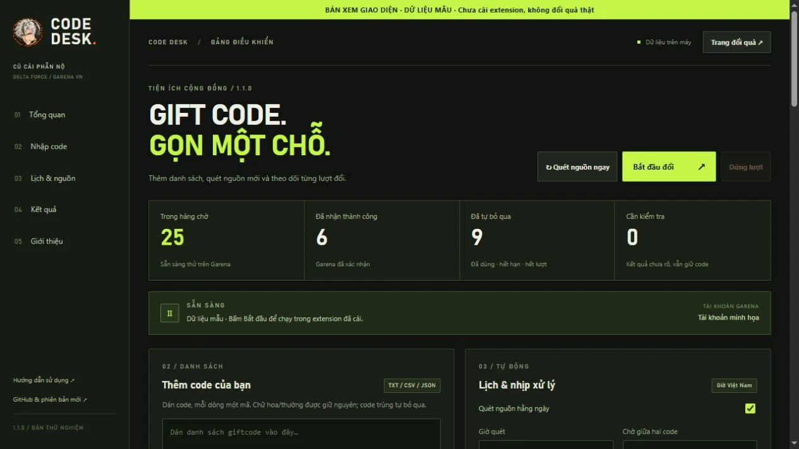
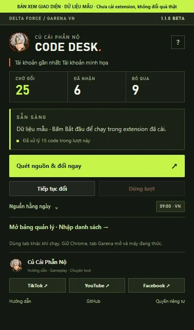
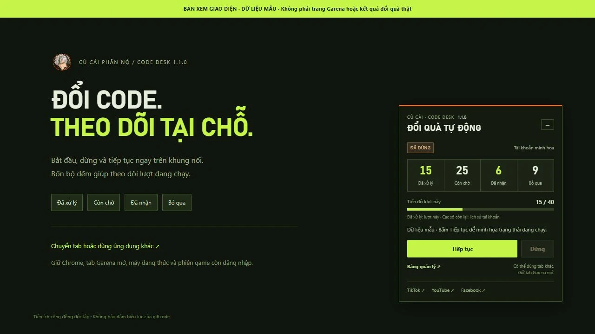

Bắt đầu ngay trên Garena.
Bắt đầu, Dừng, Tiếp tục và bộ đếm có sẵn trong khung nổi.
CHROME TRÊN MÁY TÍNH / 1.1.0 BETA
Danh sách code dài? Để Code Desk nhập lần lượt, ghi nhớ kết quả và cập nhật nguồn mới cho anh em Delta Force.
Bản thử nghiệm · Cài từ thư mục · Cập nhật thủ công
Bắt đầu, Dừng, Tiếp tục và bộ đếm có sẵn trong khung nổi.
Lưu kết quả, bỏ qua mã đã dùng hoặc hết hạn theo phản hồi Garena.
Dán code, nhập TXT/CSV/JSON hoặc quét nguồn chữ công khai theo lịch.
GIAO DIỆN / 1.1.0
Nền than, đường nét vuông và điểm nhấn xanh tín hiệu. Điều khiển nhanh trong popup; bảng quản lý dành cho danh sách và lịch.
Ảnh chụp từ mã giao diện thật với dữ liệu mẫu; chưa phải xác nhận tiện ích đã cài hoặc đổi quà trên tài khoản Garena thật.



BẮT ĐẦU / MIỄN PHÍ
Tải Garena-Code-Desk-v1.1.0.zip và giải nén vào thư mục cố định.
Mở chrome://extensions, bật Developer mode, bấm Load unpacked rồi chọn thư mục extension.
Mở trang đổi quà Garena, đăng nhập tài khoản game rồi bấm Bắt đầu.
NGƯỜI LÀM TIỆN ÍCH
Hướng dẫn dễ làm theo, chuyện loot và những pha Delta Force dở khóc dở cười. Code Desk là một tiện ích nhỏ để anh em bớt ngồi nhập từng code.
Ghé chơi cùng Củ Cải:
TRƯỚC KHI DÙNG
Code tìm thấy là ứng viên. Hiệu lực, điều kiện tài khoản và quyền nhận quà do Garena quyết định. Code Desk ghi nhận phản hồi để xử lý hàng chờ.
Cần giữ Chrome, tab Garena mở và máy đang thức. Khi hết phiên đăng nhập, gặp xác minh hoặc kết quả chưa rõ, cần kiểm tra trực tiếp trên trang Garena.
Dừng lượt, chờ code đang gửi có kết quả. Tải ZIP mới, thay nội dung extension vào đúng thư mục cũ, bấm Tải lại tiện ích rồi tải lại trang Garena. Xem từng bước trong hướng dẫn.
35/35 kiểm tra logic và 33/33 kiểm tra trình duyệt giả lập đạt. Cài bản 1.1.0 và đổi quà trên tài khoản Garena thật, cùng việc quan sát lịch qua một ngày thật, chưa được xác nhận.
Tên hiển thị, code và lịch sử được lưu trong hồ sơ Chrome. Tiện ích không có máy chủ nhận lịch sử hoặc công cụ phân tích hành vi. Xem quyền riêng tư và quyền truy cập.
CỦ CẢI CODE DESK / 1.1.0 BETA